关于SROP的学习总结
这个SROP是一种极其有趣的攻击方式，它是利用程序从内核层面切换到用户层面恢复上下文时的一个漏洞，该漏洞可以让我们自己自行设置所有寄存器里的值。
在这之前我们要先去了解一下系统调用，因为这个漏洞就是在用户态和内核态切换发生的，提到系统调用，这里还要简单介绍一下用户态和内核态的相关知识。
什么是用户态和内核态？
用户态：
CPU只能访问受限制的内存，并且不允许访问外围设备（就是不允许直接跟硬件产生关系）。此时的CPU不允许被独占，这就意味着此时的CPU可以被别的进程抢占。
内核态：
此时的CPU可以访问任何数据，包括外围设备，比如网卡，硬盘等等。并且此时的CPU可以从一个程序切换到另外一个程序，并且没有进程能够抢占CPU，因为此时内核态的特权级为0.
为什么要区分用户态和内核态？
用户态和内核态说到底就是CPU所执行的指令权限不同而划分的，而这样做的目的就是为了保护系统，在CPU的所有指令中，有一些指令是非常危险的，如果错用，将导致整个系统崩溃。比如：清内存、设置时钟等。
怎么从用户态切换到内核态？
用户态切换到内核态的3种方式：
a. 系统调用（也是我们接下来要提到的重点）
这是用户态进程主动要求切换到内核态的一种方式，用户态进程通过系统调用申请使用操作系统提供的服务程序完成工作，比如前例中fork()实际上就是执行了一个创建新进程的系统调用。而系统调用的机制其核心还是使用了操作系统为用户特别开放的一个中断来实现，例如Linux的int 80h中断。
b. 异常
当CPU在执行运行在用户态下的程序时，发生了某些事先不可知的异常，这时会触发由当前运行进程切换到处理此异常的内核相关程序中，也就转到了内核态，比如缺页异常。
c. 外围设备的中断
当外围设备完成用户请求的操作后，会向CPU发出相应的中断信号，这时CPU会暂停执行下一条即将要执行的指令转而去执行与中断信号对应的处理程序，如果先前执行的指令是用户态下的程序，那么这个转换的过程自然也就发生了由用户态到内核态的切换。比如硬盘读写操作完成，系统会切换到硬盘读写的中断处理程序中执行后续操作等。
这个博主对于用户态切换到内核态总结的很详细清楚，我这里就搬运一下。
原文链接(25条消息) 什么是用户态和内核态？_glory的博客-CSDN博客_内核态和用户态
这里这个系统调用很重要，它的存在意味着我们想执行一些较高权限的函数就需要经过系统调用来变成内核态从而得以实现函数的调用（例如read,write,open函数等等）。
用户态的上下文是怎么被保存的？
我们现在考虑一个问题，既然现在程序从用户态变成了内核态去执行系统调用的函数，那么再转变回用户态的时候，我们在用户态时寄存器的值怎么办？因为在内核执行系统调用函数的时候，寄存器的值一定是会发生改变的，可它是怎么保存了我们再用户态的上下文？
现在当我们要准备系统调用了。
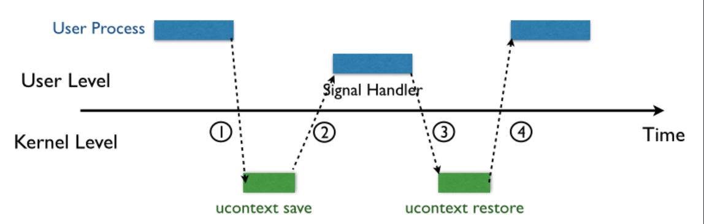
图片转自SROP - CTF Wiki (ctf-wiki.org)
过程①，内核会向进程发送一个signal（你可以把这个理解为中断信号），意思是接下来该进程被挂起，此刻由内核来接管。
过程②，内核会保存该进程在用户态的上下文，并且跳到已经注册好的Signal Handler（信号处理器），当这个Signal Handler返回的时候，内核控制去传递了一串user-space code （用户层代码），这里翻译成用户层代码可能不是特别准确，我想表达的意思是，这就是一串实现函数功能的代码并且处于在了用户层，并且这部分代码被称作signal trampoline。
过程③，它是在执行signal trampoline的过程。
过程④，内核将恢复之前保存的上下文，并且最后恢复进程的执行。
这是大体流程，接下来我们看一下保存上下文的细节。
在第二步的时候，内核就会将我们的所有寄存器压栈，同时还会把signal信息以及rt_sigreturn压栈。这个ret_sigreturn是一个地址，这个地址指向了sigreturn的这个系统调用（这个系统调用时SROP利用的核心）
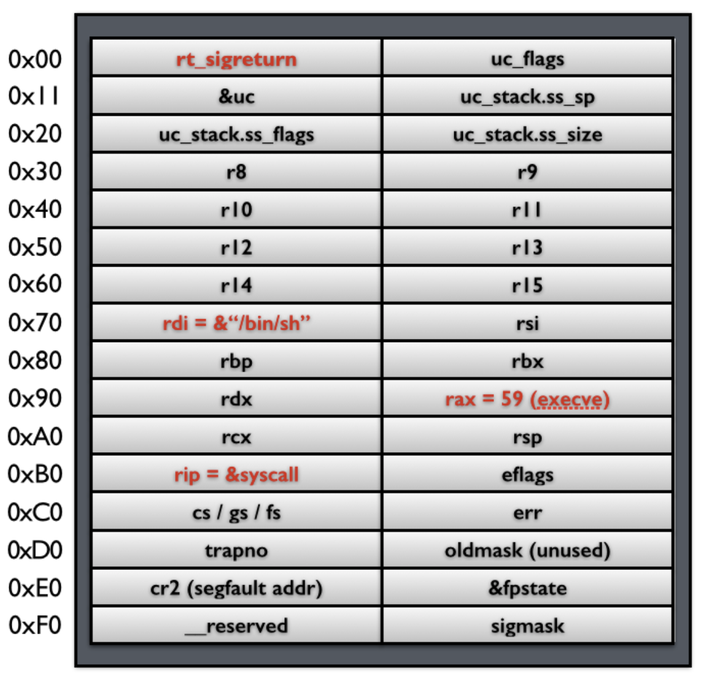
完成上述压栈之后，此时的栈布局是这样的，这段内存也被称为Signal Frame。
到了过程④的时候，此时的signal trampoline的执行已经到了最后的ret，此时的栈顶就是rt_sigreturn,因此又执行了re_sigreturn所指向的系统调用sigreturn的地址，这个系统调用函数的作用就是去把栈中的数据恢复到对应寄存器里面，也就是疯狂pop。
随着rip的值也被pop了回去，此时的程序的系统调用已经完全完成，程序继续运行。
SROP原理
理论部分
上述过程是正常的系统调用流程，而SROP则是利用了上下文保存与恢复的漏洞，如果了解了上述的内容，其实很明显就会发现有一个问题，在把寄存器压栈之后构造的Signal Frame依然是在用户进程的地址空间的，并且是用户进程可读写的。并且执行sigreturn的时候并没有检查准备恢复的这个Signal Frame是否是之前保存的Signal Frame。
这就给了我们可乘之机，我们可以去伪造一个Signal Frame然后直接执行sigreturn系统调用。
先看下正常的系统调用过程（主要看下保存与恢复上下文））（下面两个图，当时制作的时候理解的不太对，应该是执行signal trampoline,而并非是执行signal handler，这里要注意一下
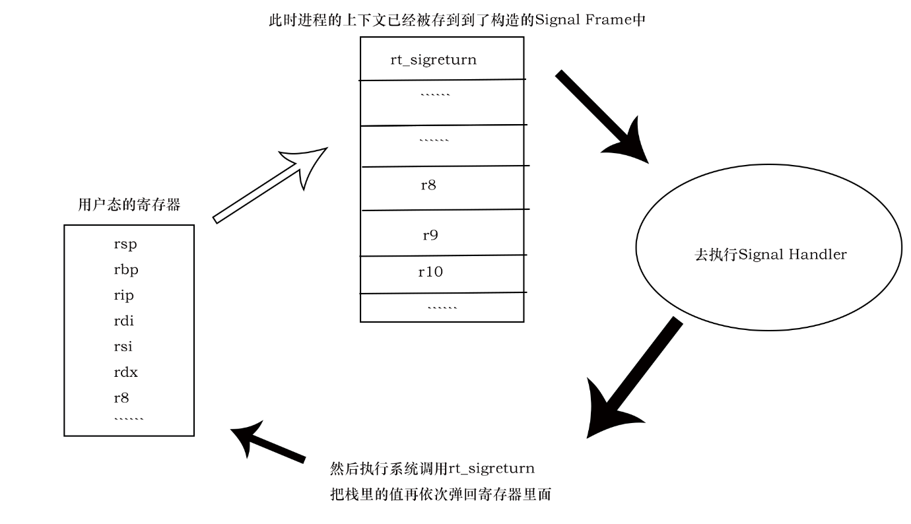
接下来看看如果我们系统调用的是sigreturn**(这个sigreturn并不是执行了其他系统调用被动执行的sigreturn，而是我们主动系统调用的就是sigreturn)**
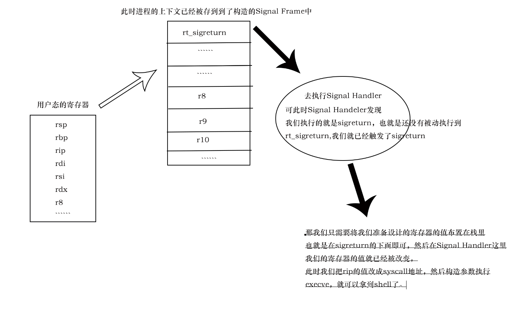
实践部分
当然上面都是理论知识，我们动态调试看一下是不是这样。
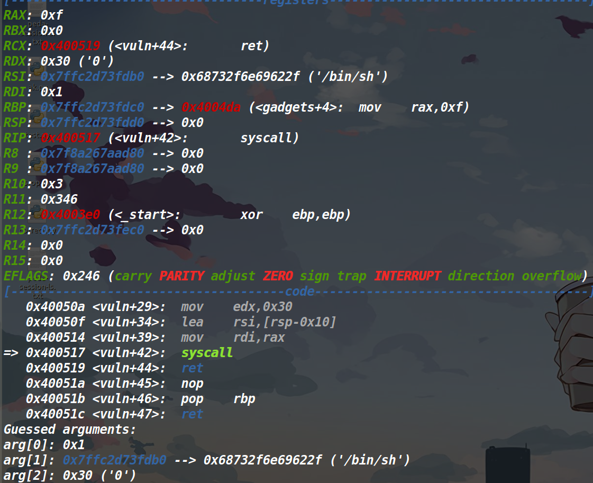
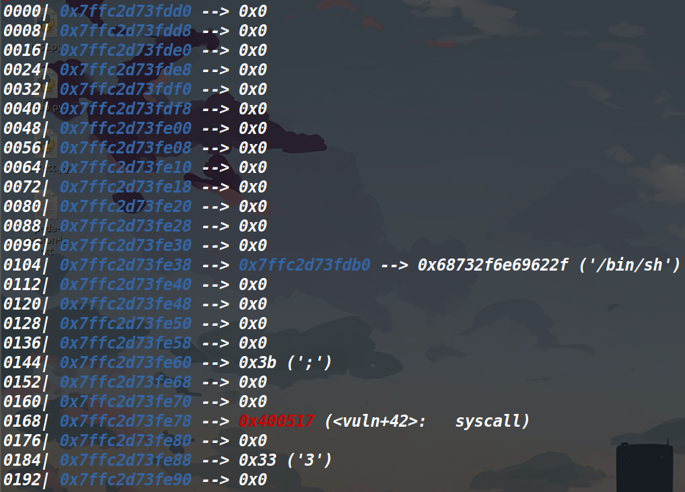
这是准备系统调用sigreturn之前的寄存器的值（此时的寄存器是将要被保存的上下文）和栈布局（此时栈的布局就是为了我们准确控制每一个寄存器的值）
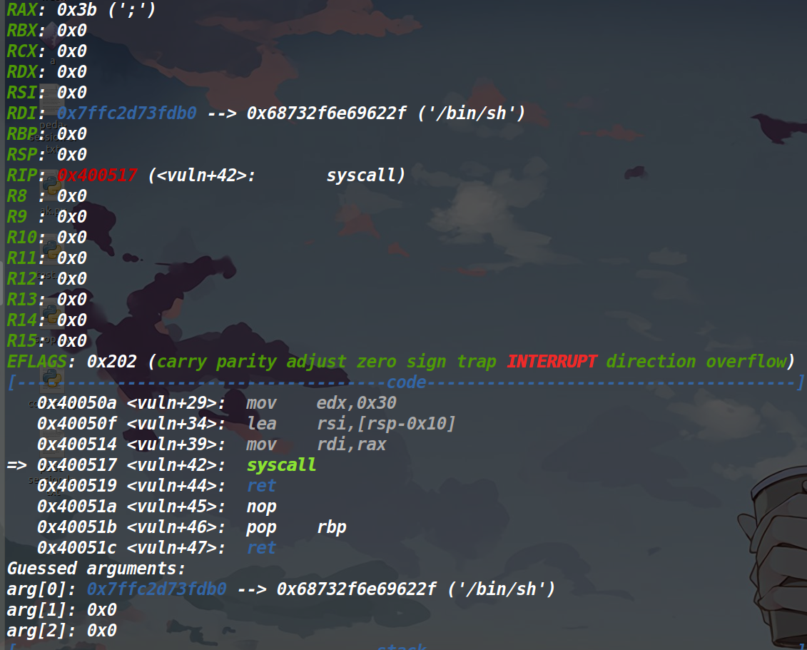
此时是系统调用sigturn之后的寄存器，可以看见参照构造的Signal Frame，精准的改变了每一个寄存器的值（此时execve的系统调用号以及参数全部被布置好了，此时只要执行了syscall就可以获取shell）
提出一个猜想
同时我们刚才理论上猜想的是主动执行了sigreturn然后执行execve是不会再让rt_sigreturn触发了（也就是不会再回到执行sigreturn之前了），那反过来就是说如果我们执行的不是execve，那最后rt_sigreturn还是会触发，也就是即使主动执行了sigreturn控制了我们想要的参数，但是系统调用结束之后，寄存器里还是我们最开始保存的参数，而非主动执行sigreturn布置的参数。
验证猜想
为了验证上面的猜想，我们再用sigreturn来布置参数的时候，布置write（1,‘/bin/sh’,7)这个系统调用，并且使其返回地址为一个_term_proc函数（返回到一个空函数，不对本次实验产生任何影响）
这个是将要因为执行sigreturn系统调用而被保存的寄存器
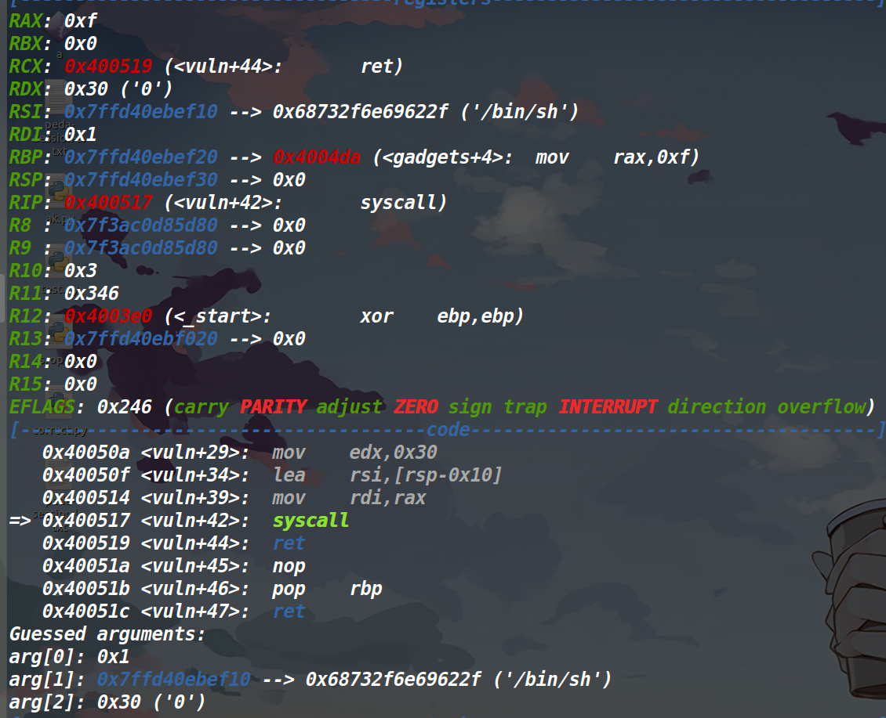
这个是执行了sigreturn之后，布置的寄存器，此时还未执行write的系统调用。
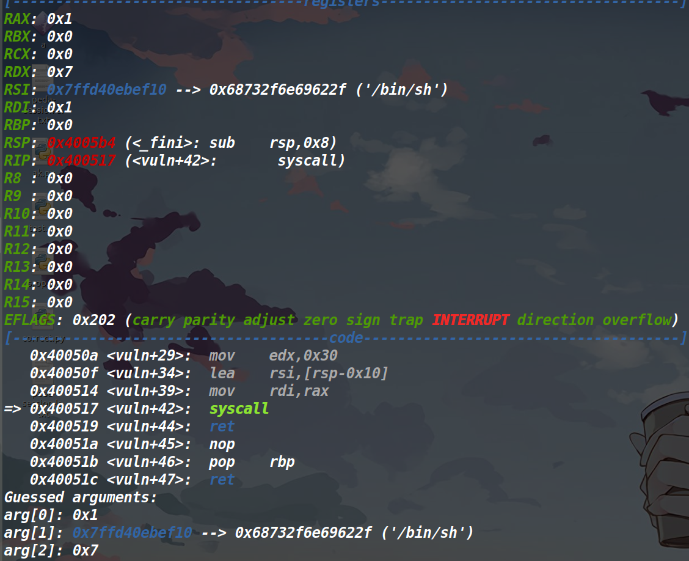
现在是执行write函数之后的寄存器，现在应该会恢复最开始的上下文了吧？
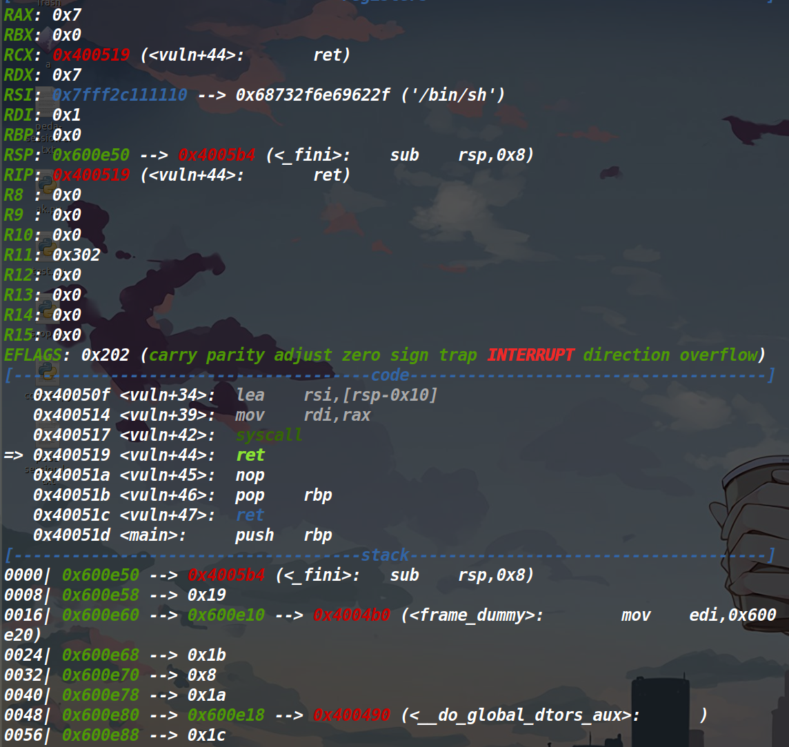
what???居然没有恢复，和最开始的猜测不一样。
那我们重新捋一下，看看是哪里出了问题？
我们利用栈溢出将返回地址设置为实现sigreturn系统调用的gadget，然后再将其后面的栈空间布置成我们想要设置的寄存器的值。待sigreturn系统调用执行完毕，此时的寄存器值，包括RSP/ESP和RIP/EIP都会被改变，可是为什么会这样呀？sigreturn本身不也是个系统调用么，那执行sigreturn之前的上下文也会被保存，执行sigreturn的时候确实会改变寄存器的值，可是执行sigreturn系统调用之后，原本的上下文不又被恢复了么（但事实是没有恢复）？
得出正确结论
这里卡了很久，roderick师傅给我的提示去看下sigreturn的官方文档。
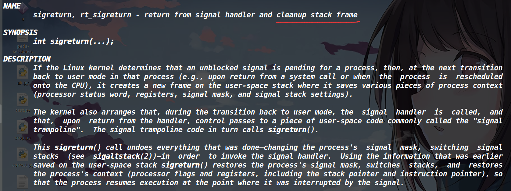
果然，在官方文档的简介中就写了cleanup stack frame，这就意味着执行了sigreturn之后的函数栈帧就会被清除掉，当时我还感觉哪里不对，怎么栈（如下图）变成绿绿的了，原来是原本的栈已经都被清除了**（本来清除的应该是Signal Frame,但是由于这是我们主动调用的sigreturn，因此把我们真正的栈给当做Siganal Frame给清除了，因此原本系统调用sigreturn所保存的上下文也在此刻是被清除了，所以我们才没有在系统调用之后得到最开始的上下文）**。
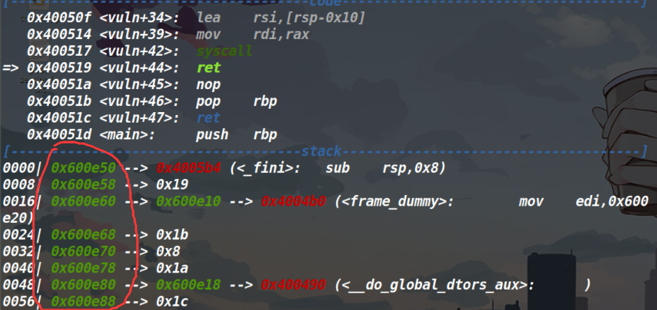
总结：
用于在内核在恢复上下文的时候并没有与保存的上下文做对比，同时内核在恢复上下文时是从构造的Signal Frame中pop出来各个寄存器的值，而此时的Signal Frame是在栈里的并且用户是可读可写的。这两点疏忽就导致了我们可以伪造Signal Frame之后主动执行sigreturn来控制每个寄存器的值。
使用SROP的前提：
1、首先程序必须存在溢出，能够控制返回地址。
2、可以去系统调用sigreturn（如果找不到合适的系统调用号，可以看看能不能利用read函数来控制RAX的值）
3、必须能够知道/bin/sh的地址，如果写的bss段，直接写地址就行，如果写到栈里，还需要想办法去泄露栈地址。
4、允许溢出的长度足够长，这样可以去布局我们想要的寄存器的值
5、需要知道syscall指令的地址
补充：一直劫持程序的控制流
最后要补充的一点是，前面介绍的方法只能调用一个syscall，然后我们就失去了对执行流的控制了，这里我们其实是可以一直劫持程序的控制流的。
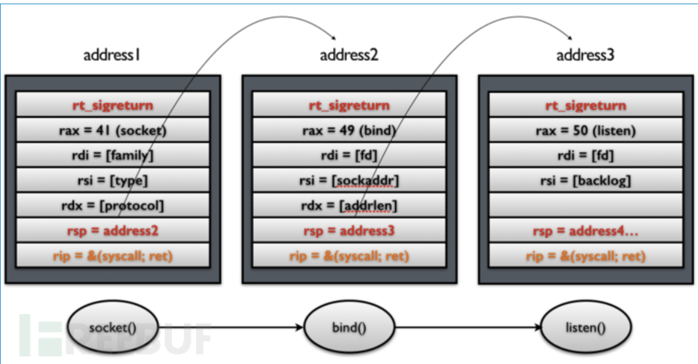
图片出自(25条消息) Sigreturn Oriented Programming (SROP) Attack攻击原理_zsj2102的专栏-CSDN博客_sigreturn 函数
依据图片我们可以发现，我们每次控制寄存器的时候，都把rsp写成下一个片段的rt_sigreturn的地址，并且rip的地址要指向syscall；ret 一定要后面有ret，不然所有的片段连不起来，到ret的时候，就会去执行rsp执行的地址，因此我们就可以一直劫持程序的控制流。
防御手段：
最后我们来提一下SROP的防范。从三个角度出发，作者提出了三种方法：
*Gadgets Prevention*
在两个重要的gadgets这章我提到，在当前的几种不同的操作系统中，sigreturn和syscall; ret这两个gadgets非常容易被找到，特别是在vsyscall这种特别不安全的机制存在的情况下。因此我们应该尽量避免这种机制，让ASLR等保护机制物尽其用，使得攻击者很难找到这些gadgets。
当然这种方法并不能从本质上解决SROP的问题。
*Signal Frame Canaries*
这种方法借鉴于stack canaries机制，即在Signal Frame的rt_sigreturn字段之前插入一段随机生成的字节，如果发生overflow，则该段字节会被破坏，从而在发生sigreturn之前会被检测到。
当然，针对stack canaries的攻击也很多，其同样不能从本质上防止SROP的发生。
*Break kernel agnostic*
这就要追溯到SROP的本质问题了，就是内核对Signal的不可知性。如果我们在内核处理sigreturn系统调用的时候判断一下当前的Signal Frame是否是由内核之前创建的，那么这个问题就能从根本上解决。当然，这就涉及到要修改内核的一些底层的设计了，可能也会引入一些新的问题。
我认为这个作者提到的这三个防御手段都非常全面，因此我就直接从这篇博客引用了(25条消息) Sigreturn Oriented Programming (SROP) Attack攻击原理_zsj2102的专栏-CSDN博客_sigreturn 函数
实战SROP
360chunqiu2017_smallest
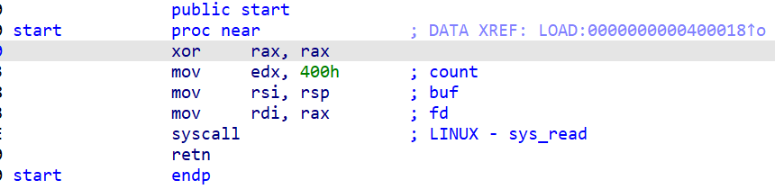
可以发现这个程序只有唯一个函数，就是这个start函数（看网上的师傅说这是因为出题人用汇编写的这个程序，编译之后也不需要与库链接）。
这就是一个read系统调用，然后就没有能利用的地方了，其实看到这个唯一的系统调用就应该往SROP的方向去想了，因为别的很多方法都不可能靠这个一个start函数完成，但是只要允许输入的长度够长，同时还有read的系统调用就可以考虑使用SROP（因为系统调用read就意味着肯定会有syscall，同时由于read返回值的特性，我们是可以控制rax的值，这也就有机会系统调用sigreturn）
现在其实最大的问题是怎么去泄露栈的地址？我们可以第一次read读入一个字符，去让系统调用号变成1，但是这就意味着我们无法控制返回地址。这里用了已经很巧妙的方法，由于每一次输入都是从栈顶开始存入数据，如果我们第一次连续输入了两个start的首地址（但事实上这里是要输入三个start的地址，不过现在我们先不讨论第三个start的作用），然后**执行了ret，此时第一个start的地址就被pop出来了，也就是说现在栈顶只有一个start地址了，同时我们现在又到了系统调用read这里，然后我们只写一个字节\xB3,这样start的地址0x4000B0就被修改成了0x4000B3，**这样使得我们的RAX里面现在的值就是1了，同时下一次返回的时候跳过了第一个指令xor rax,rax，直接从mov edx,0x400指令开始，最终实现系统调用write，从而实现栈地址泄露。（可以看见下图的左侧栈顶是0x4000b0而执行了read之后，右侧的栈顶已经是0x4000b3了）
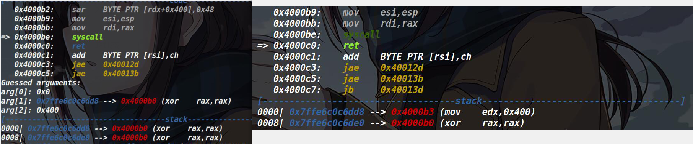
不过紧接着遇见的问题就是会发现由于只有一个函数的原因，栈底直接就是环境变量了，因此泄露出来的全都是环境变量（如下图）。
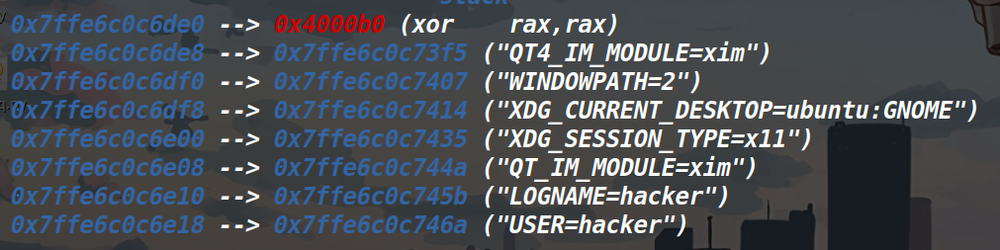
而环境变量中没有任何一个内存单元指向栈地址，因此我们没法用具体的偏移直接计算，不过好消息是，由于栈地址随机化的地址变化并不是太大，因此我们可以选取一片空的栈区去存放我们的参数和signal frame（通过泄露的地址直接减去一个较大的数据来指向这片栈区)。
最后的难点就是我们的system call chains的构建，由于我们肯定是用一次sigreturn然后控制参数去调用read（因为我们要把参数写入指定的地址），但是由于我们没办法直接系统调用 sigreturn，需要间接的用read函数来控制RAX在系统调用才行，并且还需要一次sigreturn去控制参数调用execve。
这里也是用了一个非常巧妙的手法，由于要控制RAX为15，这就意味着我们只能输入15个字节的内容，可是我们还需要去构造signal frame，因此我们分两次完成，第一次输入
payload=p64(start_addr)+'aaaaaaaa'+str(frame) |
这个start可以让我们再输入一次，而此时把frame给构建到栈里面，这八个a则是负责去占一个位置（如下图）
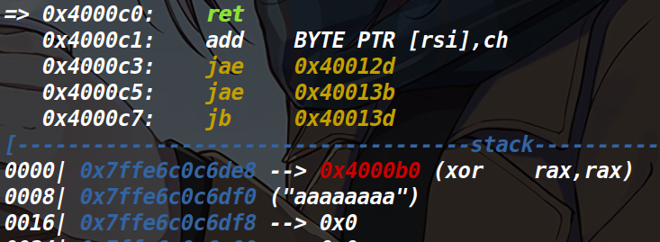
第二次输入，这样syscall就到了原本八个a占的位置，而七个b则是为了凑齐十五个字节（如下图）。
payload=p64(syscall_ret_addr)+'bbbbbbb' |
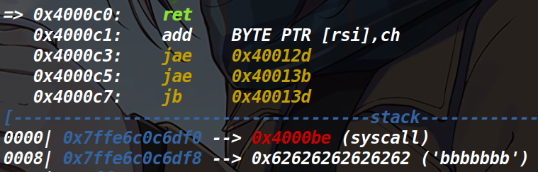
按照这两次payload就可以实现sigreturn调用了。
然后就没什么了，最后要注意一下，第二次执行sigreturn的第一个payload顺便把参数给发送过去，然后用我们在系统调用read的那个rsi配合偏移来获取/bin/sh的地址即可。
最后的exp如下
#coding:utf-8 |
BUUCTF_ciscn_2019_es_7
这里我以BUUCTF上的ciscn_2019_es_7来演示一下（这道题我最开始是用ret2csu做出来的，那个WP放到了ret2csu的那篇博客上，这篇博客写一下SROP这个方法）
其实SROP的思路很简单，并且pwntools中也提供了Sigreturn Frame类来简化我们代码的编写。
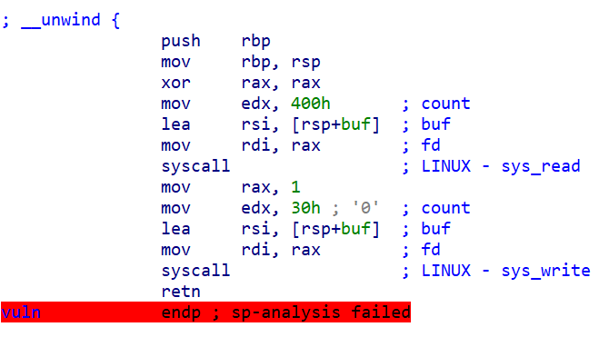
这道题在主函数里只有两个系统调用，不过发现这个write系统调用时有漏洞的，它可以打印0x30个数据，可是可以看出来buf距离栈底仅仅只有0x10字节
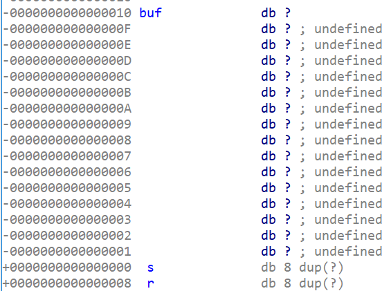
这就意味着write是可以去泄露栈中数据的，因此我们就可以配合系统调用read来把/bin/sh写入栈里面，同时里面偏移加上泄露的栈地址，我们就可以计算出/bin/sh的地址。（这个/bin/sh偏移的计算在ret2csu中已经提过了，这里就不在赘述）
然后我们还发现了系统调用sigreturn
这就意味着我们可以去实现SROP了
from pwn import * |
BUUCTF_ciscn_2019_s_3
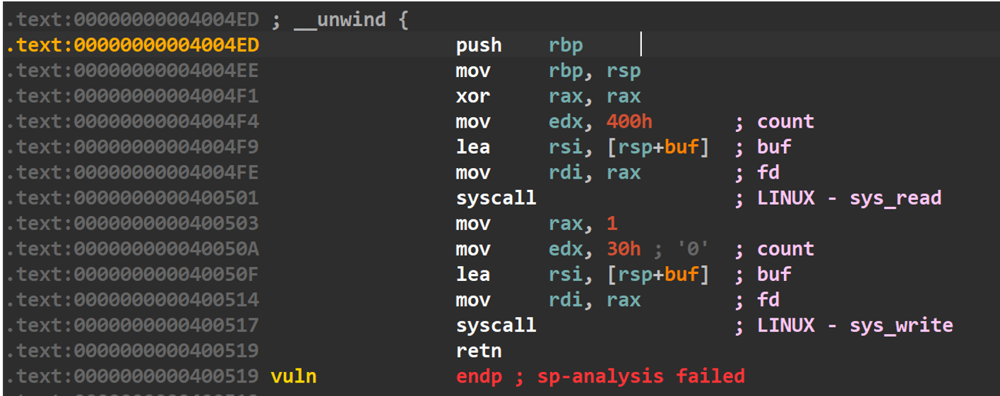
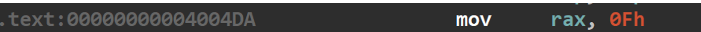
这已经很明显了，要用SROP。
先去把栈地址泄露一下。
第一次随便输入（不过最后要在返回地址上写一个vul的首地址，重新进行read）
第一次走vul就是为了write泄露地址
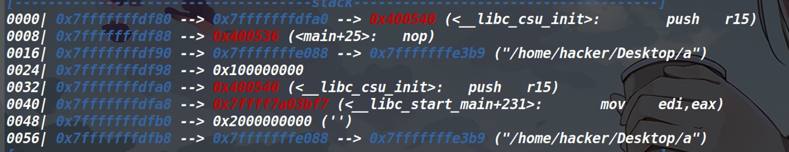
我们要泄露距离栈顶第三个的内容，因为它指向了栈地址
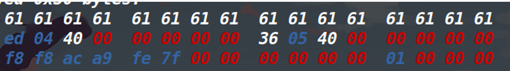
然后发现这个地址是在32字节处被接收的
经过观察read函数，发现我们payload从0x7fffffffdf70开始存储，看一下泄露的栈地址距离这个df70的偏移
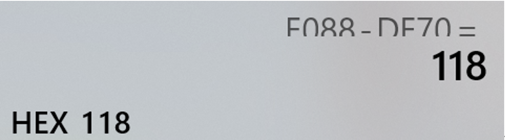
偏移拿到，然后就直接构造srop的那个payload即可，我们要保证/bin/sh在df70这个地址，然后经过调试发现这里是要填充16个字节才能到返回地址的，因此我就填了两个/bin/sh\x00，第二次填充别的也行，反正要凑齐十六个字节
Exp如下：
from pwn import * |
这道题其实收获最大的并不是这个正确的exp
而是下面这个错误的exp(这个exp脚本直接运行的话，是拿不到shell的，但是如果用gdb附加进程调试的话，是可以拿到shell的，因此这个exp是非常奇怪的，但它确实是错的，只不过因为巧合在调试的情况下，是正确的)
可以发现这个exp发送了三次payload
第三次和第二次payload就是在布置准备执行srop的条件
当时用gdb调试走到最后发现就可以获取shell
但是如果直接运行这个脚本就不能获取shell
卡了很久很久，最后请教了roderick师傅，最后豁然开朗，解释如下。
在挂gdb的时候 第二次的read还没有执行，但是内核缓冲区的数据已经拷贝到了用户数据 意思就是说 我的第二次payload和第三次的payload现在都存到了缓冲区里面 gdb调试到了第二个read，直接就把两次的payload 都给读进去了（我又看了下调试发现却是是这样） 然后这两次的内容在一次里面修改了栈空间恰好就是对的了 但是我程序运行的时候，还是发了三次的payload
简单来说就是就是其实我现在用gdb看的是一种假象，gdb现在调试让我看到的 是一次性发送了两个payload的情况，但事实上我程序本身运行的时候 并不是我现在gdb看到的情况**
以后这里就要注意了，如果是多个read的情况，使用gdb调试的时候要注意，避免一次read给读进去两次payload。
from pwn import * |
rootersctf_2019_srop
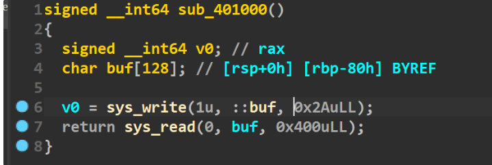
发现这里就一个输入和输出的系统调用，发现无论如何也无法泄露栈地址，因此/bin/sh直接写入栈里的话我们是不知道地址的。所以采用srop伪造两次上下文，第一次系统调用read将/bin/sh以及第二次伪造的上下文都写入data段(data段地址是固定不变的)，然后迁移到data段，进行第二次srop。
这道题控制第一次rip的gadget为syscall;leave;ret,而leave和ret指令相当于mov rbp,rsp;pop rbp;pop rip，调试一下就发现我们控制rsp没用，要去控制rbp，在执行leave;ret的时候又将rbp给了rsp，因此第一次布置的寄存器的值中只需控制rbp即可。
from pwn import * |
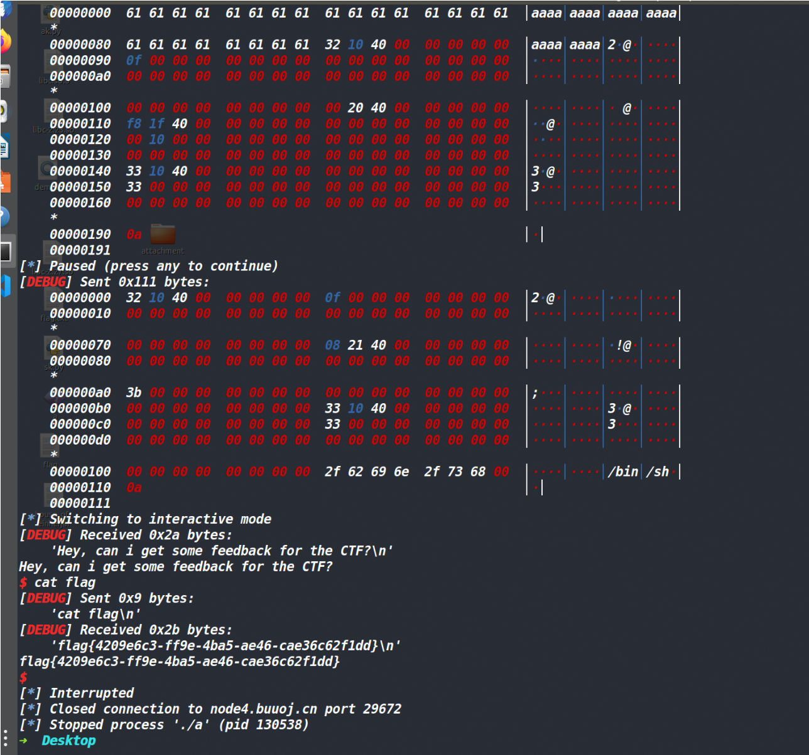